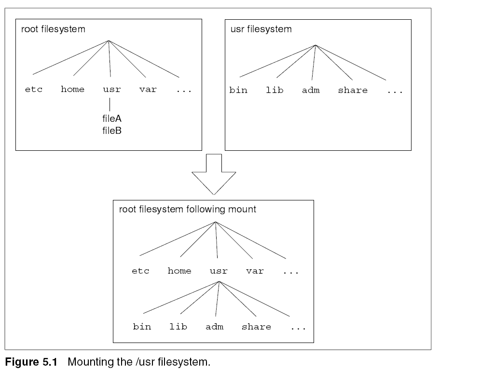
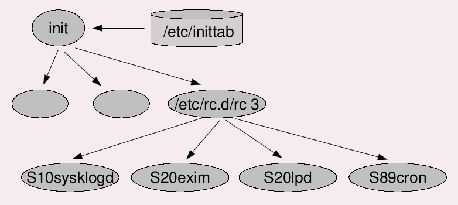
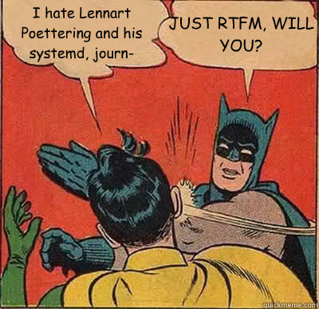

Linux
Les bases
Par Raphaël Berlamont / Erwan Le Gall / LibrIT
Pour Solystic
LibrIT ?
Fondée en 2011
Société d'édition en Logiciel Libre
Qu'est-ce qu'un logiciel libre ?
Un logiciel libre est un logiciel dont l'utilisation, l'étude, la modification et la duplication en vue de sa diffusion sont permises, techniquement et légalement.
(Dixit wikipedia)
Votre hôte
Ingénieur sytèmes
Généraliste dans le Logiciel Libre
+ de 10 ans d'expériences
Dans de petites structures, des multinationnales, et des organismes publiques (ministères, armée…)
Linux ?
Au sens large
Un système d'exploitation
(on parle alors de distributions Linux)
Au sens précis
Un noyau
(ou kernel : il s'occupe de fournir aux logiciels une interface pour utiliser le matériel)
Linux ?
Histoire
Créé en 1991 par Linus Torvald
Origine ludique
1991 : ~10k lignes de code
2015 : ~16M lignes de code
Caractéristiques d'un Unix
(et donc de Linux)
Elles regroupent un noyau et des outils
Chaque distribution a ses caractéristiques
(outils, customisations…)
Les plus connues :
| Redhat | Fedora | Centos |
| Ubuntu | Debian | Knoppix |
| Gentoo | ArchLinux | LFS |
cf : distrowatch
L'organisation des fichiers sur un système Linux
Une racine commune : /, nommée "racine" ou "root"
Des répertoires variés à usages spécifiques
Des fichiers de différents types : texte, binaires, bloc...
| Répertoire | Signification | Contenu |
|---|---|---|
| / | Racine | Racine |
| /bin | Binaires | Exécutables des commandes essentielles disponibles pour tous les utilisateurs |
| /boot | Initialisation | noyaux, images ramdisk… |
| /dev | Périphériques | Fichiers spéciaux des périphériques |
| /etc | Configurations | Fichiers de configuration au format texte |
| Répertoire | Signification | Contenu |
|---|---|---|
| /home | Répertoire personnel | Répertoires personnels des utilisateurs |
| /lib | Bibliothèques | Bibliothèques partagées essentielles et modules du noyau |
| /media | Médias | Contient les points de montages pour les médias amovibles |
| /mnt | Montage | Point de montage pour monter temporairement un système de fichiers |
| Répertoire | Signification | Contenu |
|---|---|---|
| /opt | Optionnel | Emplacement pour des applications hors paquets |
| /proc | Processus | Répertoire virtuel pour les informations système |
| /root | Répertoire administrateur | Répertoire personnel du super-utilisateur |
| /run | Exécution système | Informations relatives au système depuis son dernier démarrage |
| /sbin | Binaires système | Exécutables système essentiels |
| Répertoire | Signification | Contenu |
|---|---|---|
| /srv | Services | Données pour les services du système |
| /tmp | Temporaire | Fichiers temporaires des applications |
| /usr | Ressources système Unix | Hiérarchie secondaire, applications usuelles |
| /var | Variable | Données variables et diverses, exemple : les journaux |
La gestion des disques
MBR / GPT
késako ?
MBR
MBR : Master Boot Record
512 premiers octets du disque (1er secteur)
Contient la table des partitions
Contient le boot loader
Limite historique (CHS) à 2To
Max 4 partitions primaires
(dont une peut être "étendue" et contenir un nombre illimité de partition "logique")
GPT
GPT : GUUID Partition Table
Bien plus complexe que le MBR
Embarque un système de checksum
Utilise exclusivement LBA
Limite à + 9ZB (1ZB = 1021)
128 partitions possibles (de base)
MBR / GPT
Comparaison
| MBR | GPT |

©technet.microsoft.com |

©wikipedia |
Tout est fichier…
Premier disque : /dev/sda
8ième partition du troisième disque : /dev/sdc8
Anciens systèmes utilisant le driver IDE : /dev/hdXY
La gestion des disques
Les systèmes de fichiers
ext(2-3-4)
Systèmes de fichiers historique des distributions Linux
Attention : Nombre limité d'inodes
ext3
Journalisé
Redimensionnable à chaud
Taille max d'un fichier : 16GiB à 2TiB
Taille max d'une partition : 4TiB à 32TiB
obsolète
ext4
Caractéristiques d'ext3
Taille max d'un fichier : 16TiB
Taille max d'une partition : 16TiB à 1EiB
Actuellement par défaut sur la majorité des distributions
Btrfs
Système de fichier futur de Linux
(actuel pour certaines distributions)
COW
Features en veux-tu en voilà
(defrag, loadblancing, RAID, dedup…)
En 2015, pas encore par défaut sur les distribs
Les autres…
- nfs : système de fichier réseau unix
- cifs : système de fichier réseau «Samba» (partage windows)
- iso9660 : système de fichier des galettes (CD/DVD/BR…)
- vfat : fat32 de Microsoft
- ReiserFS, jfs, xfs, zfs : autres FS…
La gestion des disques
Les outils…
… pour le partitionnement
- fdisk : partitionnement MBR en mode interactif
- gdisk : partitionnement GPT en mode interactif
- gparted : partitionnement graphique
…pour les systèmes de fichiers
- df : Disk Free, montre l'espace disponible
- du : Disk Usage, montre l'espace utilisé par un fichier / répertoire
- resize2fs : redimensionne un système de fichier (pour ext2-3-4)
- fsck : vérifie le système de fichiers
- mkfs : créé le système de fichier (format)
- cryptsetup : chiffrement d'un système de fichiers
- mount : permet de «monter» une partition
La gestion des disques
mount ?
unix : the big difference
Contrairement à Windows, il n'y a pas de C: | D: | Z:…
Une racine (une partition)
Cette racine contient des répertoires
Ces répertoires peuvent pointer sur une partiton
Un schéma vaut tous les discours…

Comment garder tout ça au boot ?
/etc/fstab
| /dev/mapper/vm1-usr | /usr | ext3 | defaults | 0 | 2 |
| partition/disque | point de montage | format | option de montage | sauvegarde | réparation/test (man fstab) |
La gestion des disques
LVM
Dans les grandes lignes
Permet d'aggréger plusieurs volumes physiques (PV)
L'aggrégat de ces volumes physiques donne un groupe de volumes (VG)
Ces groupes de volumes peuvent être divisés en volumes logiques (LV)
Les LV apparaissent dans /dev/NOM_DU_VG/NOM_DU_LV
Un schéma vaut tous les discours…

©helios.de
Les outils pour gérer LVM
- pvcreate : initialise un volume physique en «PV» LVM
- vgcreate : créé un groupe de volumes (VG) avec un ou plusieurs PV
- lvcreate : créé un volume logique (LV) en piochant dans un VG
- vgresize : redimensionne un groupe de volume
- lvresize : redimensionne un volume logique
- vgdisplay : affiche les informations d'un groupe de volume (espace libre…)
- man lvm :)
La gestion des disques
Mise en pratique…
À vous de jouer :
- Télécharger une image de la distribution Debian
- Créer une machine virtuelle avec 2 disques de 10Go chacuns
- Lancer une installation de Debian
- Mettre en place du LVM durant l'installation
- Séparer la partition /var sur un volume logique de 3Go en xfs
- Réserver 12Go pour / en EXT4
- Finalisez l'installation qui doit comprendre une interface graphique
- Manipulez l'interface pour être à l'aise
- Lancer une console... Et commençons nos premières commandes
Les utilisateurs
Théorie
Linux est multi utilisateurs
Ceci entraîne un certain nombre de problématiques
Droits de lecture
Droits d'écriture
Droits d'éxécution
Les commandes
useradd : ajout d'utilisateurs sur linux
adduser : ajout d'utilisateurs sur debian
groupadd : ajout de groupes sur linux
addgroup : ajout de groupes sur debian
del* : suppression d'utilisateurs/groupes
chown : change le propriétaire des fichiers
chmod : change les droits des fichiers
chown
La commande "ls -l" indique le propriétaire actuel d'un fichier :
drwxr-xr-x 2 elegall elegall 4096 mai 9 2018 Images
La commande chown va modifier ce propriétaire :
chown -R root:root Images
chmod
La commande "ls -l" indique les droits actuels sur un fichier :
drwxr-xr-x 2 elegall elegall 4096 mai 9 2018 Images
La commande chmod va modifier ces droits :
chmod ugo+rwx Images
ou en format binaire :
chmod 777 Images
Remarque : la commande permet d'autres options
À vous de jouer :
- Lancez une console en tant qu'utilisateur standard (non root)
- Déplacez-vous dans le répertoire /tmp
- Créez un répertoire TP2
- A qui appartient ce répertoire ?
- Quels sont les droits sur ce répertoire
- Rendre ce répertoire accessible uniquement pour votre utilisateur
- Créez un fichier "monfic" dans TP2 contenant le mot "Privé"
- Connectez-vous en tant que root sur une autre console
- Sur cette console, essayez de lire le contenu du fichier /tmp/TP2/monfic
- Que constatez-vous, que pouvez-vous en conclure ?
Les processus
Le premier process
C'est l'unique process chargé directement par le noyau
Charge les deamons et outils de l'espace utilisateur
Configurable (qu'est-ce qu'on démarre?)
Les plus connus sont :
- init (System V)
- systemd
- upstart
- openrc
init
Origine Systeme V
Fichier de configuration /etc/inittab

systemd

systemd
Origine Fedora (Auteur Lennart Poettering)
Grosse usine à Gaz
Prend en charge l'ensemble du système de boot
Composé d'une 60aine de binaires
Temps de boot fortement réduit grâce à la //
Outils à connaitre :
- systemctl
- journalctl
Source de troll
Mise en application
Relancer le processus d'OpenSSH.
Rappel sur le réseau
Couches réseau
Ethernet / Wifi
IP
TCP/UDP
Couche applicative
Quelques protocoles
ARP
DNS
DHCP
ICMP, TCP, UDP
... Et beaucoup d'autres
Un outil pour configurer simplement le réseau sous Linux
nmtui : Attention il ne peut être lancé que par root
Les paquets Debian
APT
Historiquement dpkg
apt-get / aptitude / apt : dpkg avec gestion des dépendances
Mise en application
Installer ntp
THE END
licence : CC BY-SA 3.0